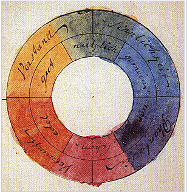

todas as corres
Cor é como o cérebro (dos seres vivos animais) interpreta os sinais eletro nervosos vindos do olho, resultantes da reemissão da luz vinda de um objeto que foi emitida por uma fonte luminosa por meio de ondas eletromagnéticas; e que corresponde à parte do espectro eletromagnético que é visível (380 a 700 nanômetros - 4,3x10^14 Hz a 7,5x10^14 Hz).
A Cor não é um fenômeno físico. Um mesmo comprimento de onda pode ser percebido diferentemente por diferentes pessoas (ou outros seres vivos animais), ou seja, cor é um fenômeno fisiológico, de caráter subjetivo e individual.

Os comprimentos de ondas visíveis se encontram aproximadamente entre os 380 e 750 nanômetros ou frequências ( 4,3x10^14 Hz a 7,5x10^14 Hz). Ondas mais curtas (ou com maiores frequências) abrigam o ultravioleta, os raios-Xe os raios gama. Ondas mais longas (com menores frequências) contêm o infravermelho, o calor, as micro-ondas e as ondas de rádio e televisão. O aumento de intensidade pode tornar perceptíveis ondas até então invisíveis, tornando os limites do espectro visível algo elástico.
O olho humano
O olho humano é um mecanismo complexo desenvolvido para a percepção de luz e cor. É composto basicamente por uma lente e uma superfície fotossensível dentro de uma câmara, que pode grosseiramente ser comparada a uma máquina fotográfica. A córnea e a lente ocular formam uma lente composta cuja função é focar os estímulos luminosos. A íris (parte externa colorida) comanda a abertura e o fechamento da pupila da mesma maneira que um diafragma. O interior da íris e da coroide é coberto por um pigmento preto que evita que a luz refletida se espalhe pelo interior dos olhos.
O interior do olho é coberto pela retina, uma superfície não maior que uma moeda de um real e da espessura de uma folha de papel. Neste ponto do processo da visão, o olho deixa de se assemelhar a uma máquina fotográfica e passa a agir mais como um scanner. A retina é composta por milhões de células altamente especializadas que captam e processam a informação visual a ser interpretada pelo cérebro. A fóvea, no centro visual do olho, é rica em cones, um dos dois tipos de células fotorreceptoras. O outro tipo, o bastonete, se espalha pelo resto da retina. Os cones, segundo a teoria tricromática (teoria de Young-Helmholtz), são responsáveis pela captação da informação luminosa vinda da luz do dia, das cores e do contraste. Os bastonetes são adaptados à luz noturna e à penumbra
As cores percebidas pelo olho humano dividem-se em três tipos e respondem preferencialmente a comprimentos de ondas diferentes de luz. Temos cones sensíveis aos vermelhos e laranjas, aos verdes e amarelos e aos azuis e violetas. Aos primeiros se dá o nome de
R
(red/vermelho), aos segundos G
(green/verde) e aos últimos B
(blue/azul).